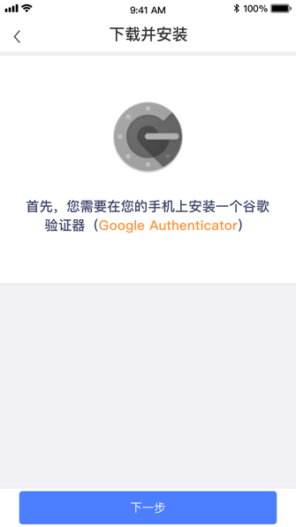
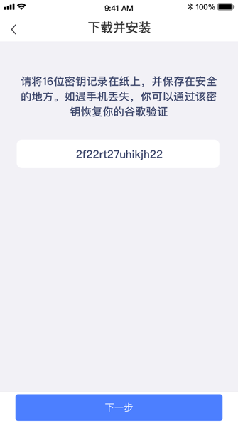
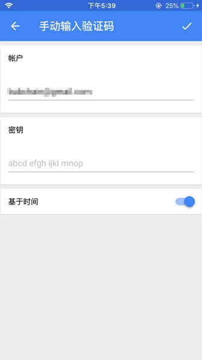
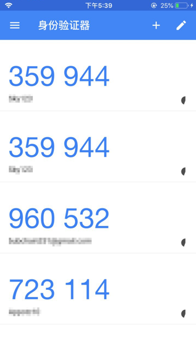
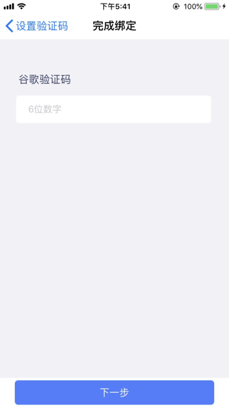

什么是Google二步验证?如何绑定?
谷歌验证器是一款动态口令工具，工作原理类似短信动态验证。绑定后每 30 秒生成一个动态验证码，验证码可用于登录、资金操作、修改安全设置等操作的安全验证。
如何绑定
第一步：登录币友APP，点击我的 - 身份认证 - 实名认证
第二步：安装谷歌二步验证器(如已安装可跳过) 
第三步：复制币友APP上的密钥
PS : 请您务必保管好密钥，当手机丢失无法进行谷歌两步验证时，作为重新绑定的重要凭证。

第四步：打开Google二步验证器，并添加一个BUB Pay帐号，并输入币友APP上的密钥 
第五步：记住谷歌验证二步验证器对BUB Pay帐号生成的实时验证码 
第六步：返回币友APP输入谷歌二步验证码 
第七步：绑定完成